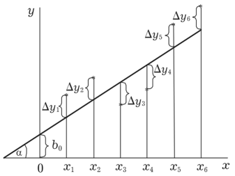

W22 (2022) — English translation
As industry developed, the need arose to work with gases. They needed to be extracted, transported, stored, and any of these stages required calculations of the state of the gases. Already in the middle of the 19th century, the formulated model of an ideal gas ceased to satisfy industrialists who worked with gases under high pressures and low temperatures. Accordingly, attempts have been made to propose refined models describing the states of gases. The interactions between gas molecules are quite complex, so a simple model is unlikely to be possible. But industrialists, to a large extent, did not require a perfectly verified physical model; they were quite satisfied with the empirical equations of state that were proposed by scientists. In this problem, you will try to determine the parameters of dependencies in a number of models using the least squares method. Then, having plotted the initial data and the modeled dependence on one graph, visually assess the satisfactoriness of the model.
The practical basis of least squares is the minimization of the sum of squared deviations of experimental points from some modeling (fitting) curve. Let a set of some points $(x_i, y_i)$ be given, the number of pairs of points is equal to $n$. Let's set some modeling function $f=f(x, a_1, a_2, \dots)$, where $a_1, a_2, \dots$ are the function parameters that can be varied. The variation of the parameters should result in the following sum being the minimum: $$ S = \sum_n~\Delta y_i^2 = \sum_n~\left(y_i-f(x_i, a_1, a_2, \dots)\right)^2 \rightarrow \min_{a_1, a_2, \dots} $$ Задача минимизации этой суммы сводится к решению системы уравнений: \begin{equation} \begin{cases} \cfrac{\partial S}{\partial a_1}=0\\ \cfrac{\partial S}{\partial a_2}=0\\ \dots \end{cases} \end{equation} где значок $\partial$ denotes differentiation with respect to the variable specified in the denominator when the other variables are fixed.

Let's look at how this works using the example of a well-known linear relationship. The fitting function is $f(x)=kx+b$. We minimize the following amount: $S= \sum_n~(y_i-kx_i-b)^2$. According to what is written above, we obtain the system \end{cases} \end{equation}
Both equations can be divided by 2 and nothing will change. Thus, we get: \begin{equation} \begin{cases} \sum_n~(-x_iy_i)+\sum_n~kx_i^2+\sum_n~bx_i=0\\ \sum_n~(-y_i)+\sum_n~kx_i+\sum_n~b=0 \end{cases} \end{equation} and further, taking out from under the sum sign the quantities $k$ and $b$, \begin{equation} \begin{cases} \sum_n~x_iy_i=k\sum_n~x_i^2+b\sum_n~x_i\\ \sum_n~y_i=k\sum_n~x_i+b\sum_n~1 \end{cases} \end{equation} it is clear that we have obtained a system of linear equations for the parameters $k$ and $b$, having solved it, we will find those parameters $k$ and $b$ that minimize the original sum. The coefficients in the system of equations are simply sums over the entire data set of the following quantities $(x_iy_i), (x_i)^2, x_i, y_i$. The last coefficient $\sum_n~1$ before $b$ is simply the number of data points, i.e. $\sum_n~1=n$. Having solved the system of equations for $k$ and $b$, we obtain: $$ k=\cfrac{-n\sum_n~x_iy_i+\sum_n~x_i\sum_n~y_i}{-n\sum_n~x_i^2+\left(\sum_n~x_i\right)^2} $$ $$ b=\cfrac{-\sum_n~x_i\sum_n~x_iy_i+\sum_n~x_i^2\sum_n~y_i}{-\left(\sum_n~x_i\right)^2+n\sum_n~x_i^2} $$ Если числитель и знаменатель каждого выражения поделить на $n^2$, то получатся более изящные формулы: $$ k=\cfrac{-\overline{xy}+\overline x\,\overline y}{-\overline{x^2}+\overline x^2} $$ $$ b=\cfrac{-\overline x\,\overline{xy}+\overline{x^2}\,\overline y}{-\overline x^2+\overline{x^2}} $$ where the bar means averaging the value over the entire data set. Using these formulas, your calculators and computers calculate the parameters of the modeling relationship. In some cases where you can linearize the relationship, what's described above also applies, of course. In cases where the dependence cannot be linearized, it is necessary to optimize the coefficients from scratch (and, generally speaking, this is not always possible, it depends on the function).
Attention! In the scoring, very narrow gates will be set for the range of determined values. The expressions by which you will calculate the optimal values of quantities should be written in the form of sums or average values of quantities. It is assumed that you will do all calculations numerically, counting amounts similar to those described above. Probably, graphical methods for solving some points will not provide the necessary accuracy. There is no need to estimate errors.
For one mole of some nonideal gas, the dependence $T(V)$ on the isobar $p=2~МПа$ was removed. The data table is provided in the answer sheet. The relationship is slightly non-linear, and your task will be to find a suitable model to describe it.
Let us model the state of the gas using the equation $(p+a_0)V=RT$. It is necessary to select a value of $a_0$ that would minimize the sum of squared deviations of the experimental points from the model curve.
Let us model the state of the gas using the equation $(p+\cfrac{a_1}{V})V=RT$. It is necessary to select a value of $a_1$ that would minimize the sum of squared deviations of the experimental points from the model curve.
Let us model the state of the gas using the equation $(p+\cfrac{a_2}{V^2})V=RT$. It is necessary to select a value of $a_2$ that would minimize the sum of squared deviations of the experimental points from the model curve.
Let us model the state of the gas using the equation $(p+\cfrac{c}{V^2}+\cfrac{d}{V^3})V=RT$. It is necessary to select such values of $c$ and $d$ that would minimize the sum of squared deviations of the experimental points from the model curve.
Let us model the state of the gas using the equation $(p+\cfrac{a}{V^2})(V-b)=RT$. It is necessary to select such values of $a$ and $b$ that would minimize the sum of squared deviations of the experimental points from the model curve.
Source: https://pho.rs/p/273